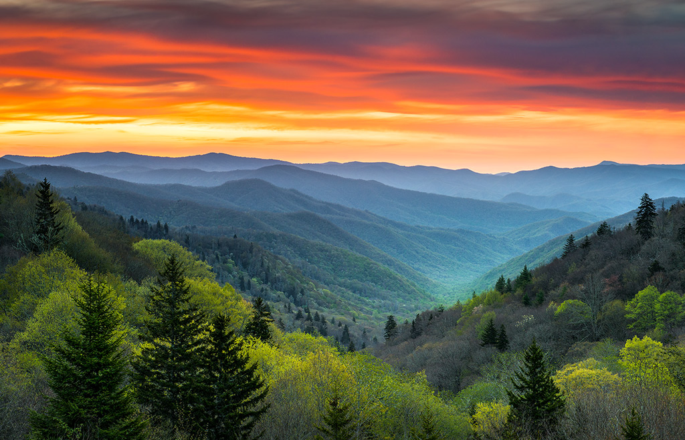

About the Great Smoky Mountains
The Great Smoky Mountains are a mountain range rising along the Tennessee–North Carolina border in the southeastern United States. They are a subrange of the Appalachian Mountains and form part of the Blue Ridge Physiographic Province.
Renowned for their diversity of plant and animal life, the beauty of their ancient mountains, and the remnants of Southern Appalachian mountain culture, the Smokies are a destination for nature lovers and adventurers alike.
As the most visited national park in the United States, the Great Smoky Mountains National Park offers endless opportunities for exploration and discovery. The park was designated as a UNESCO World Heritage Site because of its natural significance.
Whether you are here to hike, photograph wildlife, or simply soak in the breathtaking landscapes, the Smokies welcome you to a world of wonder and tranquility.